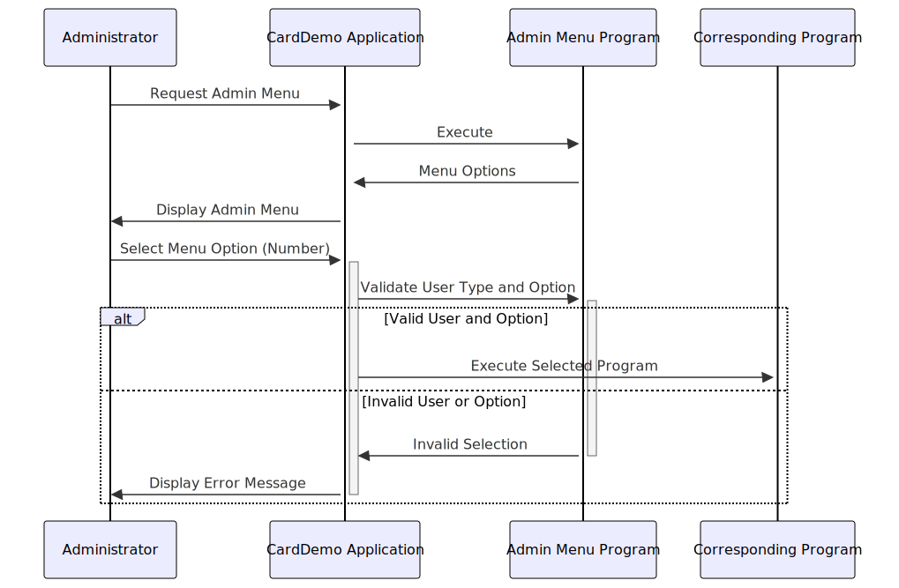

Gerado em: 1 de outubro de 2024
Título do Documento: CardDemo Application - Especificação das Opções do Menu Administrativo
Descrição Resumida: Este documento descreve as opções de menu disponíveis para administradores no aplicativo CardDemo, um sistema baseado em COBOL para gerenciar operações de cartão de crédito. Ele define a estrutura e o conteúdo do menu administrativo, especificando as opções disponíveis e suas chamadas de programa correspondentes.
Histórias de Usuário:
Como administrador, preciso de acesso a um menu dedicado com opções para gerenciar vários aspectos do sistema de cartão de crédito, incluindo contas, cartões, transações e relatórios, para que eu possa executar minhas tarefas administrativas com eficiência.
Épico Relacionado: 6 - Gerenciamento de Usuários e Segurança
Requisitos Técnicos:
- Exibição do Menu:
- O menu administrativo é exibido após o login bem-sucedido de um usuário com privilégios administrativos.
- As opções do menu são apresentadas em um formato de lista numerada, permitindo que o administrador selecione uma opção digitando o número correspondente.
- Cada opção do menu exibe um nome descritivo para o usuário, indicando a funcionalidade que ela fornece.
- Execução da Opção:
- Ao selecionar uma opção do menu, o sistema executa o programa COBOL associado a essa opção.
- O nome do programa associado a cada opção do menu é armazenado no campo
CDEMO-MENU-OPT-PGMNAME da estrutura de dados CARDDEMO-MAIN-MENU-OPTIONS.
- Validação do Tipo de Usuário:
- O sistema verifica o tipo de usuário para garantir que apenas administradores autorizados possam acessar e interagir com as opções do menu administrativo.
- O campo
CDEMO-MENU-OPT-USRTYPE, definido como ‘U’ para ‘Usuário’, indica que a opção do menu está acessível a usuários administrativos, que são considerados um tipo de usuário dentro do sistema.
Modelos Relacionados:
CARDDEMO-MAIN-MENU-OPTIONS:
CDEMO-MENU-OPT-NUM (Numeric(2)): Número de sequência da opção do menu.CDEMO-MENU-OPT-NAME (Alphanumeric(35)): Nome de exibição da opção do menu.CDEMO-MENU-OPT-PGMNAME (Alphanumeric(8)): Nome do programa associado à opção do menu.CDEMO-MENU-OPT-USRTYPE (Alphanumeric(1)): Tipo de usuário autorizado a acessar a opção.
Configurações:
- O número de opções do menu é definido pela variável
CDEMO-MENU-OPT-COUNT.
- O número de sequência, nome de exibição, nome do programa e tipo de usuário de cada opção do menu são codificados na estrutura
CDEMO-MENU-OPTIONS-DATA.
Melhorias de Código:
- Geração Dinâmica de Menu: Em vez de codificar as opções do menu, recupere-as de um banco de dados ou arquivo de configuração. Isso permite atualizações e personalizações mais fáceis do menu sem modificar o código do programa.
- Controle de Acesso Baseado em Função (RBAC): Implemente o RBAC para controlar dinamicamente quais opções do menu são exibidas com base na função e permissões do administrador.
- Navegação do Menu: Aprimore a experiência do usuário fornecendo instruções claras para navegação no menu, como voltar ao menu anterior ou sair do aplicativo.
- Tratamento de Erros: Implemente o tratamento de erros para seleções de menu inválidas, exibindo mensagens apropriadas ao usuário e permitindo que ele insira sua escolha novamente.
Melhorias de Segurança:
- Validação de Entrada: Valide todas as entradas do usuário para evitar ataques de injeção, como injeção de SQL ou cross-site scripting (XSS).
- Gerenciamento de Sessão: Implemente práticas seguras de gerenciamento de sessão, como o uso de cookies seguros e mecanismos de tempo limite, para proteger contra acesso não autorizado.
- Registro e Auditoria: Registre todas as ações administrativas, incluindo seleções de menu e execuções de programas, para fins de auditoria e monitoramento de segurança.
Diagrama Conceitual:

–Made by “Smart Engineering” (by Compass.UOL)–